| Grupo 6 — Integrantes | Correo institucional |
|---|---|
| Perez Torres, Christopher Renato | christopher.perez@utec.edu.pe |
| Quispe Monzon, Oswaldo Alejandro | oswaldo.quispe@utec.edu.pe |
| Soto Cristobal, Camilo Ernesto | camilo.soto@utec.edu.pe |
| Teran Taica, Mauricio Eduardo | mauricio.teran@utec.edu.pe |
| Enlaces del entregable | |
|---|---|
| Video de explicación (YouTube) | [FALTA: enlace de YouTube] |
| Datos experimentales y análisis | https://github.com/oswaldoaqm/optica-ondas-lab2-espejos |
Datos tomados el 22 y el 29 de octubre de 2026. Este documento reúne las gráficas, los cálculos y las fotografías de la experiencia, y sirve de referencia para la explicación desarrollada en el video.
Objetivo. Analizar las imágenes que forma un espejo esférico y determinar experimentalmente la distancia focal y el radio de curvatura de su cara cóncava, comparando lo observado con el trazado de rayos.
Hipótesis. Si el espejo cumple la ecuación 1/d₀ + 1/dᵢ = 1/f, el aumento M debe variar linealmente con la distancia imagen, con pendiente −1/f e intercepto 1. Con las mismas mediciones, 1/dᵢ contra 1/d₀ debe ser una recta de pendiente −1.
Conclusión principal. La cara cóncava cumple la ecuación del espejo. Usando solo distancias, f = 19.85 ± 0.05 cm, a 0.7 % del valor del fabricante, y R = 39.7 ± 0.1 cm. El ajuste de M contra dᵢ que pide la guía da f = 21.2 ± 1.6 cm y R = 42.5 ± 3.1 cm con R² = 0.958: es compatible con 20 cm, pero unas treinta veces menos preciso, porque depende de alturas de imagen de 0.6 a 1.6 cm medidas con una regla de 1 mm.
Como resultado adicional, la recta de 1/dᵢ contra 1/d₀ tiene pendiente −0.996 ± 0.042, a 0.4 % del valor teórico, lo que comprueba la ecuación del espejo sin usar ninguna altura. La cara convexa no formó imagen en la pantalla en ninguna de las tres posiciones probadas, como predicen los diagramas de rayos para una imagen virtual.
| Magnitud | Valor | Origen |
|---|---|---|
| Distancia focal, f | 20 cm | valor del fabricante |
| Radio de curvatura, R = 2f | 40 cm | ecuación (1) de la guía |
| Altura del objeto, hₒ | 2.0 cm | medida con regla |
| Resolución de la regla | 1 mm (± 0.05 cm) | regla de 30 cm |
| f con la ecuación del espejo | 19.85 ± 0.05 cm | promedio de las 10 filas del Cuadro 1 |
| R con la ecuación del espejo | 39.7 ± 0.1 cm | R = 2f |
| f del ajuste de M contra dᵢ | 21.2 ± 1.6 cm | f = −1/pendiente |
| R del ajuste de M contra dᵢ | 42.5 ± 3.1 cm | R = 2f |
| f con intercepto fijo en 1 | 19.8 ± 0.1 cm | ajuste de un solo parámetro |
| f de la recta 1/dᵢ contra 1/d₀ | 19.9 ± 0.3 cm | f = 1/intercepto |
La flecha de la fuente se colocó en 0 cm del riel, así que la lectura del riel en la posición del espejo es directamente la distancia objeto d₀.
La posición de la imagen y su tamaño se relacionan con la distancia focal mediante las ecuaciones (2) y (3) de la guía:
Con la convención del apéndice D.3: f es positiva para el espejo cóncavo y negativa para el convexo; dᵢ positiva indica imagen real y negativa, virtual; M negativa indica imagen invertida. Despejando f de la primera ecuación se obtiene la distancia focal de cada fila del Cuadro 1:
Reemplazando 1/d₀ = 1/f − 1/dᵢ en la ecuación del aumento:
La gráfica de M contra dᵢ que pide la sección 3 de la guía es, por lo tanto, una recta de pendiente −1/f e intercepto 1. Por eso el ajuste es lineal: la forma la fija la teoría, no se eligió para que el R² saliera alto. De la pendiente a se obtiene f = −1/a y R = 2f; el intercepto queda como control.
Si la ecuación del espejo se cumple, esta recta tiene pendiente −1 y su intercepto es 1/f. No usa alturas.
La altura de la imagen y la del objeto se leen con la regla, con una incertidumbre de ± 0.05 cm cada una. Para cada punto del Cuadro 1:
Los ajustes se hicieron por mínimos cuadrados con numpy.polyfit, que entrega la matriz de covarianza de los parámetros.
| Análisis | Método | Notebook |
|---|---|---|
| f por fila | f = d₀·dᵢ/(d₀ + dᵢ), promedio y error estándar de la media | 01 |
| Ajuste de M contra dᵢ | Mínimos cuadrados lineal; f = −1/a, R = 2f | 01 |
| Intercepto fijo | M − 1 = a·dᵢ, ajuste de un parámetro | 01 |
| Alturas frente a distancias | hᵢ/hₒ comparado con −dᵢ/d₀ fila por fila | 01 |
| Recta de los inversos | Ajuste de 1/dᵢ contra 1/d₀; pendiente esperada −1 | 01 |
| Casos del Cuadro 2 | dᵢ y M teóricos, diferencia porcentual y tipo de imagen | 02 |
| Espejo convexo | dᵢ y M teóricos con f = −20 cm en las tres posiciones probadas | 02 |
Todo el código, ejecutado y con sus salidas, está disponible en el repositorio enlazado en la portada.
| N° | Elemento | Función en el sistema |
|---|---|---|
| 1 | Riel óptico con escala | Alinea los soportes y da las posiciones en centímetros |
| 2 | Fuente de luz con flecha | Es el objeto: una flecha de 2 cm de alto, ubicada en 0 cm |
| 3 | Soporte para pantalla | Sostiene la hoja de papel grueso donde se proyecta la imagen |
| 4 | Soportes deslizantes | Permiten mover el espejo y la pantalla a lo largo del riel |
| 5 | Espejo cóncavo-convexo de doble cara | Una cara cóncava y otra convexa; f = 20 cm según el fabricante |
| 6 | Regla de 30 cm y hojas bond | Medir la altura de la imagen y armar la pantalla |
Se colocaron en el riel la fuente, el soporte para pantalla y el espejo, con la cara cóncava hacia la fuente. La pantalla se armó doblando varias veces una tira de hoja bond hasta formar una lámina gruesa. El borde de la fuente, que coincide con la posición de la flecha, se ubicó en 0 cm del riel.
Antes de medir se dibujaron los diagramas de rayos de los apéndices A y B. Para el Cuadro 1 el espejo se colocó en diez posiciones entre 45 y 91 cm de la fuente, todas con d₀ > R. En cada una se desplazó la pantalla hasta encontrar la imagen más nítida, se leyó la distancia imagen y se marcaron los extremos de la imagen sobre el papel para medir su altura con la regla.
Para el Cuadro 2 se fijaron cuatro posiciones, una por caso: d₀ = 50, 40, 35 y 10 cm. En el último caso, más cerca que el foco, la imagen no apareció en la pantalla. Al final se volteó el espejo para trabajar con la cara convexa, se colocó a 50, 30 y 10 cm de la fuente y en cada posición se buscó la imagen con la pantalla.
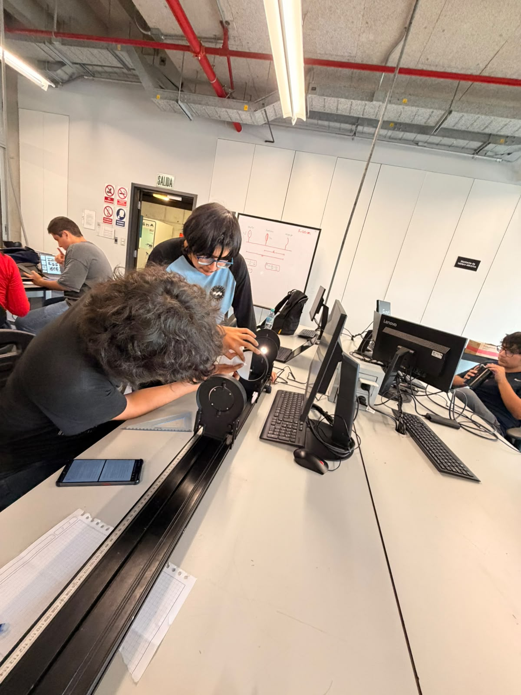
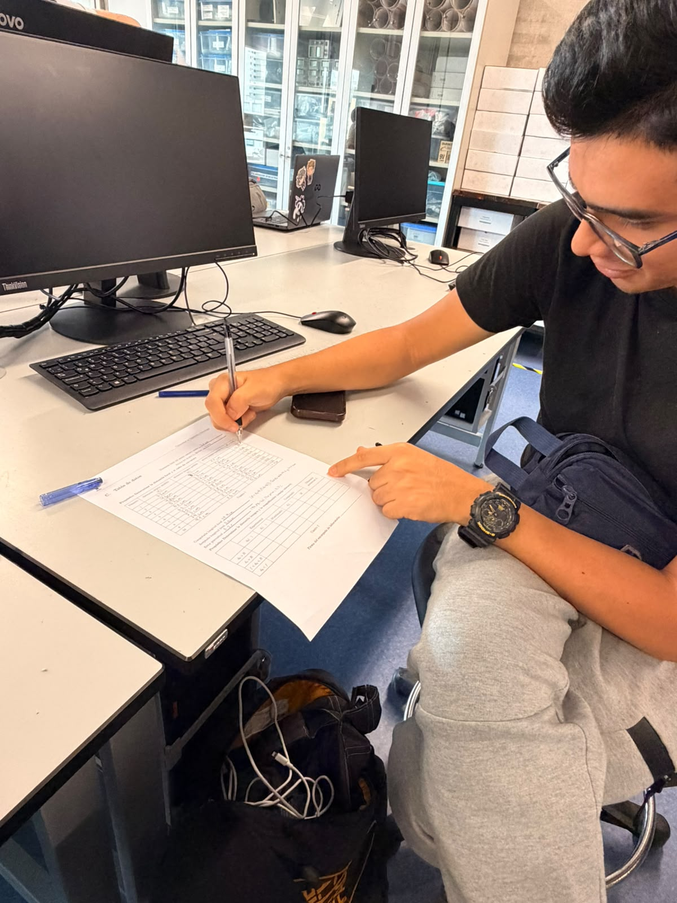
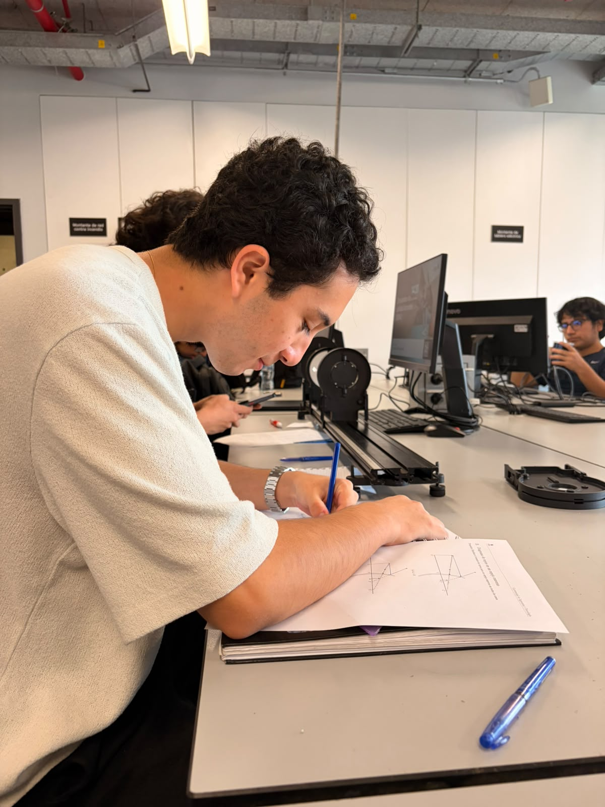
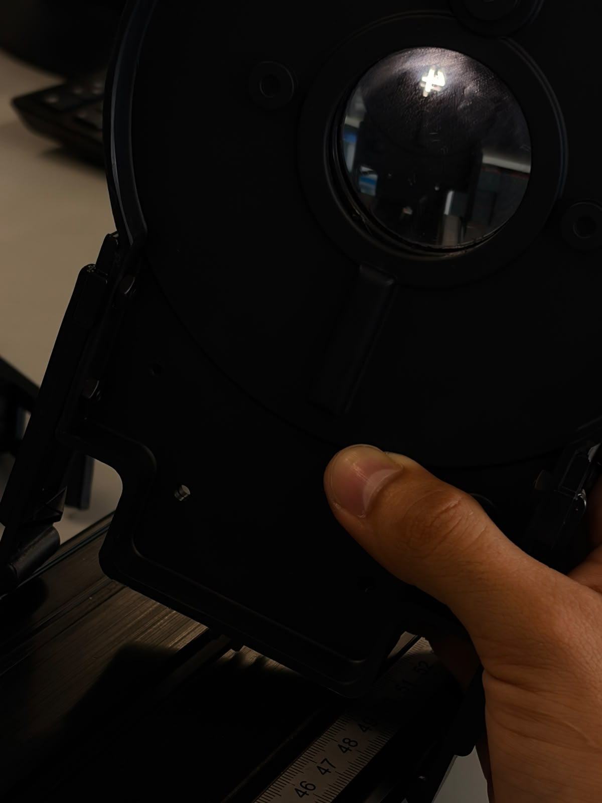
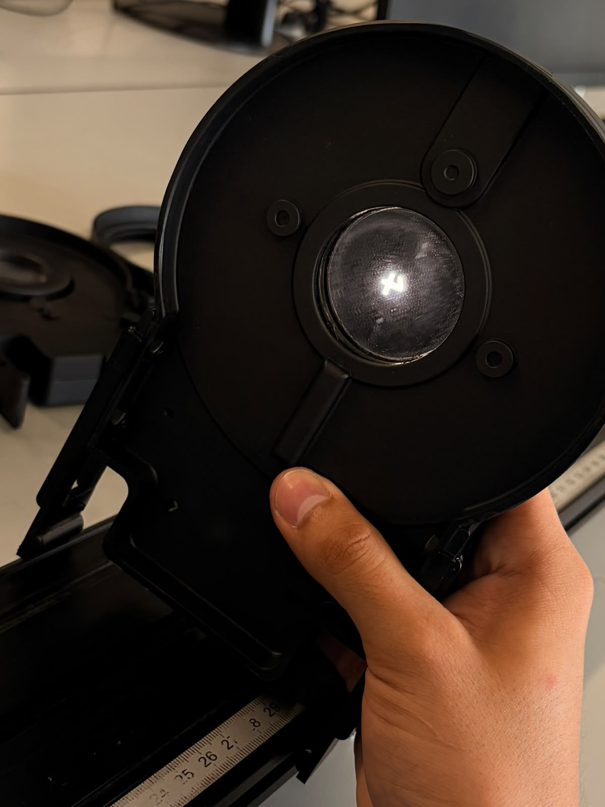
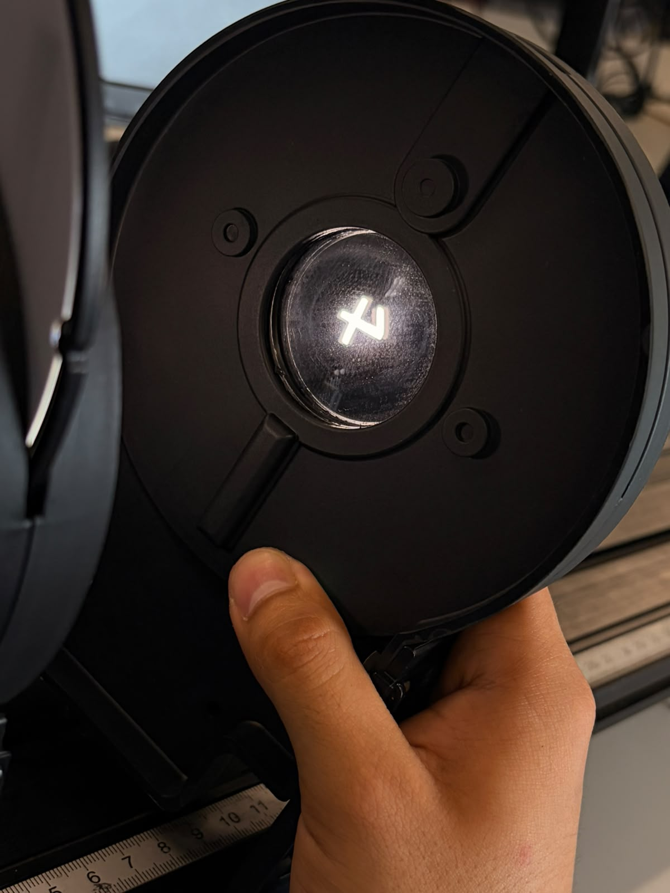
| N° | d₀ (cm) | dᵢ (cm) | hᵢ (cm) | M = hᵢ/hₒ | −dᵢ/d₀ | f (cm) |
|---|---|---|---|---|---|---|
| 1 | 52.0 | 32.0 | 1.1 | −0.55 | −0.615 | 19.81 |
| 2 | 45.0 | 35.0 | 1.6 | −0.80 | −0.778 | 19.69 |
| 3 | 48.0 | 34.0 | 1.4 | −0.70 | −0.708 | 19.90 |
| 4 | 57.0 | 31.0 | 1.1 | −0.55 | −0.544 | 20.08 |
| 5 | 62.0 | 29.0 | 1.0 | −0.50 | −0.468 | 19.76 |
| 6 | 65.5 | 28.5 | 0.9 | −0.45 | −0.435 | 19.86 |
| 7 | 70.0 | 28.0 | 0.8 | −0.40 | −0.400 | 20.00 |
| 8 | 73.0 | 27.0 | 0.8 | −0.40 | −0.370 | 19.71 |
| 9 | 79.0 | 27.0 | 0.7 | −0.35 | −0.342 | 20.12 |
| 10 | 91.0 | 25.0 | 0.6 | −0.30 | −0.275 | 19.61 |
En las diez filas la imagen fue real, invertida y reducida: d₀ siempre fue mayor que R, y por eso M es negativo y menor que 1 en valor absoluto. La altura hᵢ se anotó como magnitud; el signo negativo de M corresponde a la convención de la guía, que toma hᵢ negativa para una imagen invertida. La distancia focal calculada fila por fila va de 19.61 a 20.12 cm, con promedio de 19.85 ± 0.05 cm (desviación estándar 0.17 cm, dispersión de 0.9 %). Frente a los 20 cm del fabricante, el error porcentual es de 0.7 %.
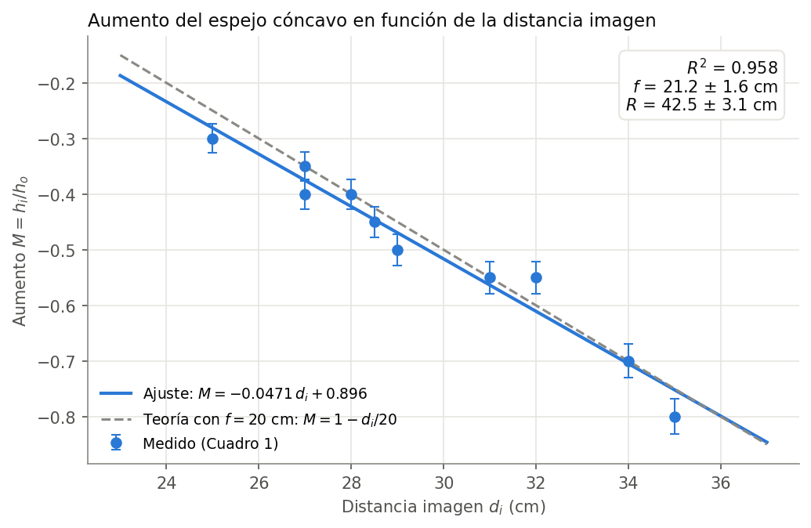
| Parámetro | Valor ajustado | Observación |
|---|---|---|
| Pendiente, a | −0.0471 ± 0.0035 cm⁻¹ | teoría: −1/f = −0.050 cm⁻¹ |
| Intercepto, b | 0.896 ± 0.104 | teoría: 1 |
| R² | 0.958 | |
| f = −1/a | 21.2 ± 1.6 cm | 6.2 % sobre el valor del fabricante |
| R = 2f | 42.5 ± 3.1 cm | teoría: 40 cm |
Se esperaba una recta decreciente: mientras más lejos del espejo se forma la imagen, más grande sale. Los datos siguen esa forma con R² = 0.958. En el rango medido, de dᵢ = 25 a 35 cm, la recta ajustada y la teórica se separan como máximo 0.03, que es del tamaño de la incertidumbre de cada punto (entre 0.026 y 0.032).
| Caso | d₀ (cm) | dᵢ medido (cm) | dᵢ teórico (cm) | M estimado | M teórico | Diferencia dᵢ |
|---|---|---|---|---|---|---|
| d₀ > R | 50 | 33.0 | 33.3 | −0.70 | −0.67 | 1.0 % |
| d₀ = R | 40 | 40.0 | 40.0 | −1.00 | −1.00 | 0 % |
| f < d₀ < R | 35 | 42.0 | 46.7 | −1.25 | −1.33 | 10.0 % |
| d₀ < f | 10 | no se proyecta | −20.0 | no registrado | +2.00 | no aplica |
En los tres casos con imagen real, el signo y el tamaño del aumento estimado a ojo coinciden con la teoría. La diferencia más grande, 10 %, está en f < d₀ < R. En ese caso, y también en d₀ = R, la imagen se forma sobre la fuente o detrás de ella (dᵢ teórico de 40 y 46.7 cm con el espejo a 40 y 35 cm), donde la pantalla no puede ubicarse en el mismo eje que el objeto y el punto de mejor enfoque es más difícil de encontrar. En d₀ < f el dᵢ teórico es negativo: la imagen es virtual y la pantalla no puede recogerla.
| Caso | d₀ (cm) | dᵢ teórico (cm) | M teórico | Observado en la pantalla |
|---|---|---|---|---|
| d₀ > R | 50 | −14.3 | +0.29 | no se formó imagen |
| f < d₀ < R | 30 | −12.0 | +0.40 | no se formó imagen |
| d₀ < f | 10 | −6.7 | +0.67 | no se formó imagen |
Con f = −20 cm, la ecuación del espejo da dᵢ negativo y 0 < M < 1 en las tres posiciones: imagen virtual, derecha y reducida, detrás del espejo y a menos de 20 cm de él. La imagen crece cuando el espejo se acerca a la fuente, pero nunca llega al tamaño del objeto. En el laboratorio no se pudo proyectar en ninguna de las tres posiciones (figura 2).
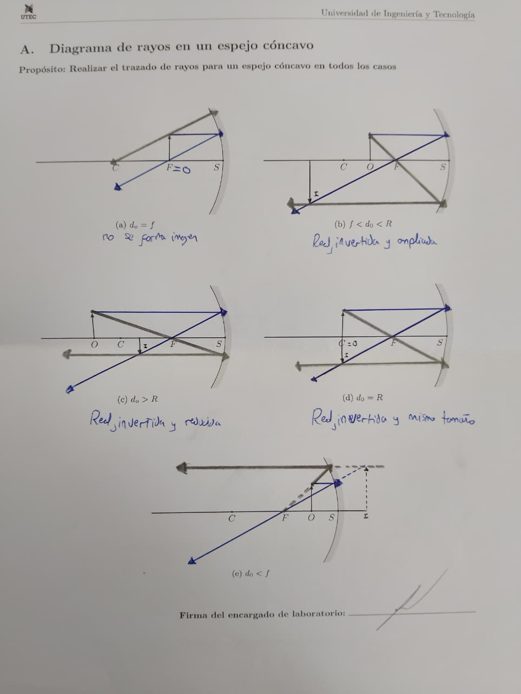
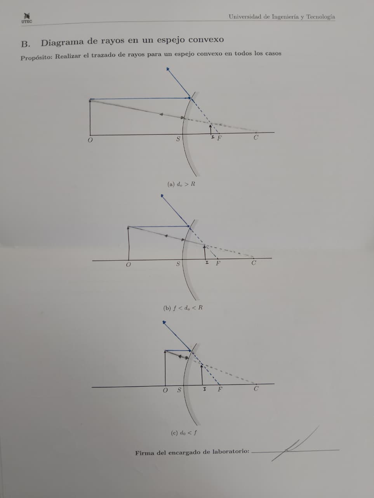
| Caso | Observado | Trazado de rayos | ¿Coincide? |
|---|---|---|---|
| d₀ > R | Real, invertida y reducida (M ≈ −0.7) | Real, invertida y reducida, entre C y F | Sí |
| d₀ = R | Real, invertida, mismo tamaño (M ≈ −1) | Real, invertida, mismo tamaño, en C | Sí |
| f < d₀ < R | Real, invertida y ampliada (M ≈ −1.25) | Real, invertida y ampliada, más allá de C | Sí |
| d₀ < f | No se proyecta en la pantalla | Virtual, derecha y ampliada, detrás del espejo | Sí: una imagen virtual no se puede proyectar |
Las diez filas del Cuadro 1 confirman además el primer caso: con d₀ entre 45 y 91 cm la imagen siempre fue real, invertida y reducida, y se formó entre 25 y 35 cm del espejo, es decir, entre C (40 cm) y F (20 cm), como en el diagrama (c) del apéndice A.
El caso d₀ = f solo se trabajó con el trazado de rayos: los rayos reflejados salen paralelos y no se forma imagen. La ecuación del espejo dice lo mismo, porque dᵢ = d₀·f/(d₀ − f) crece sin límite cuando d₀ se acerca a f.
El espejo cóncavo forma imágenes de los tres tipos según dónde esté el objeto: reales, invertidas y reducidas lejos del espejo; del mismo tamaño en C; ampliadas entre C y F; y virtuales, derechas y ampliadas dentro de la distancia focal. El convexo, en cambio, dio el mismo tipo de imagen en los tres diagramas del apéndice B: virtual, derecha y reducida, entre el espejo y su foco. En el laboratorio la pantalla no recogió imagen con la cara convexa en ninguna posición, y la flecha solo se vio reflejada dentro del espejo (figura 2). Lo observado coincide con los diagramas de los dos apéndices.
El ajuste lineal no se eligió por conveniencia: la sección 3.2 muestra que, si el espejo cumple la ecuación del espejo, M contra dᵢ tiene que ser una recta. El intercepto ajustado, 0.90 ± 0.10, es compatible con el 1 que predice la teoría, y la pendiente da f = 21.2 ± 1.6 cm, que incluye a 20 cm dentro de su incertidumbre.
El valor de f del ajuste es menos preciso que el obtenido fila por fila por dos razones. La primera es que depende de hᵢ, una longitud de 0.6 a 1.6 cm medida con una regla de 1 mm: cada punto lleva entre 3 % y 8 % de incertidumbre. La figura 5 compara, fila por fila, el aumento medido con alturas contra el que predicen las distancias de la misma fila. En siete filas coinciden dentro de la incertidumbre; en tres (d₀ = 52, 62 y 73 cm) no, y la de 52 cm es la que más se aleja: 1.1 cm medido contra 1.23 cm esperado. La segunda razón es el rango: como todas las posiciones del Cuadro 1 tuvieron d₀ > R, la distancia imagen solo varió entre 25 y 35 cm, un brazo corto para fijar una pendiente, que quedó con 7 % de incertidumbre.
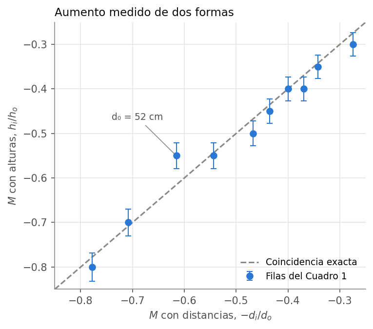
| Método | f (cm) | Error frente a 20 cm | Usa alturas |
|---|---|---|---|
| Ecuación del espejo, fila por fila | 19.85 ± 0.05 | 0.7 % | No |
| Ajuste de M contra dᵢ | 21.2 ± 1.6 | 6.2 % | Sí |
| Ajuste con intercepto fijo en 1 | 19.8 ± 0.1 | 1.1 % | Sí |
| Recta de 1/dᵢ contra 1/d₀ | 19.9 ± 0.3 | 0.6 % | No |
Al fijar el intercepto en 1, que es lo que impone la teoría, el ajuste solo tiene que determinar la pendiente y f baja a 19.8 ± 0.1 cm. La guía no indica la tolerancia del valor del fabricante, así que la diferencia de 0.15 cm entre 19.85 cm y 20 cm no se puede atribuir con seguridad ni al espejo ni a la medición.
Para separar el efecto de la regla, se probó la ecuación del espejo usando solo distancias, con la recta de la sección 3.3. Si la ecuación se cumple, la pendiente de 1/dᵢ contra 1/d₀ tiene que ser −1.
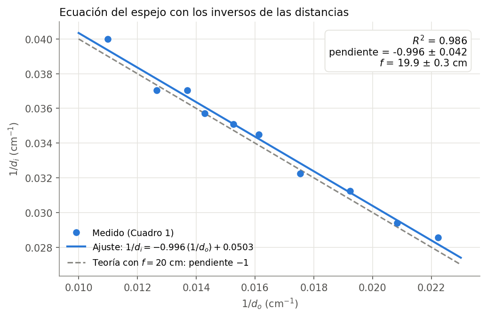
La pendiente ajustada es −0.996 ± 0.042, a 0.4 % de −1, con R² = 0.986, y del intercepto sale f = 19.9 ± 0.3 cm. Es una prueba de la ecuación misma, no solo de la distancia focal: los datos tienen la forma que predice la teoría sin depender de ninguna medición de altura.
Con estos números se entienden dos espejos de uso diario. Un espejo de maquillaje es cóncavo y se usa con la cara más cerca que el foco: con nuestro espejo y la cara a 10 cm, la ecuación del espejo da una imagen virtual, derecha y dos veces más grande, que es la última fila del Cuadro 2. Los espejos de vigilancia de las tiendas y los retrovisores convexos usan el caso contrario: con nuestra cara convexa, la ecuación da para un objeto a 50 cm un aumento de 0.29, lo que permite ver más escena en el mismo espejo. Como los objetos se ven más pequeños, parecen más lejanos de lo que están, y por eso los retrovisores convexos de los autos llevan la advertencia de que los objetos están más cerca de lo que aparentan.
| Fuente de error | Efecto y mejora propuesta |
|---|---|
| Resolución de la regla sobre hᵢ | Entre 3 % y 8 % por punto en M. Medir la altura con un calibrador, o fotografiar la pantalla junto a una escala. |
| Criterio de enfoque | La posición más nítida depende de quien mira, como advierte la guía. Repetir cada enfoque con dos integrantes y promediar. |
| Bordes de la imagen en el papel | Los extremos de la flecha no son del todo nítidos al marcarlos. Usar una pantalla más blanca y marcar con una punta fina. |
| Imagen sobre la fuente o detrás de ella | En d₀ = R y f < d₀ < R la pantalla no puede ubicarse en el eje; de ahí el 10 % de diferencia. Inclinar levemente el espejo para recoger la imagen al costado de la fuente. |
| Rango corto de dᵢ en el Cuadro 1 | Todas las posiciones con d₀ > R dejaron dᵢ entre 25 y 35 cm. Agregar posiciones con f < d₀ < R, donde la imagen sale ampliada, hᵢ es mayor y el error relativo de la regla baja. |
Los datos de los cuadros 1 y 2 se transcribieron desde la hoja del apéndice C firmada por el encargado del laboratorio, cuya fotografía está en la carpeta evidencias/ del repositorio. Hay una sola corrección, la distancia objeto del caso d₀ < f, explicada abajo. Ningún valor fue descartado y todo el cálculo ocurre dentro de los notebooks.
Distancia objeto del caso d₀ < f. En la hoja firmada la última fila del Cuadro 2 dice 15 cm. La medición se hizo con el espejo a 10 cm, como confirman los valores calculados en la misma hoja, dᵢ = −20 cm y M = 2, que solo corresponden a d₀ = 10 cm: con 15 cm habrían sido −60 cm y +4. En el análisis se usó 10 cm.
Distancia imagen de la fila 1 del Cuadro 1. El primer dígito está repasado en la hoja; el valor registrado es 32 cm.
Aumento estimado del caso d₀ < f. La casilla quedó vacía en la hoja, por lo que no se reporta un valor observado; solo el teórico, M = +2.
Fila de d₀ = 52 cm. Su altura de imagen se aleja de la que predicen sus distancias (sección 7.3). Se conservó en todos los ajustes.
Documento de referencia del Laboratorio 2 — Formación de imágenes en espejos cóncavos y convexos. Grupo 6, Óptica y Ondas, UTEC 2026-II. Elaborado como apoyo a la explicación desarrollada en el video enlazado en la portada.